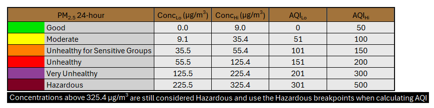

11/25 22:39

198 outdoor sensors returned data in the selected region, of which 119 were used for coloring after filtering for confidence in PM2.5 measurement and location rating. Click on map markers for specific sensor data.
Data retrieved on 11/25/24 22:39:42 PST
The following table was used to calculate AQI from PM2.5 concentrations; 30 minute concentration averages were used. All concentrations greater than 325.4 µg/m3 are reported to have an AQI of 501.
Ordinary Kriging calculated using the "hole-effect" variogram model with PyKrige. The variance plot approximates uncertainty in the map's AQI shading.